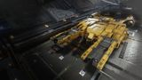

Ore hold (practical)
~300–340 t
An excellent high-volume medium miner with the biggest ore hold of any medium pad ship — over 400 tonnes of capacity for the longest laser-mining sessions before docking. Ranks just below the dedicated Type-11 and the Python because it can't defend itself well; for sheer ore throughput short of a capital ship, nothing its size hauls more.

This ship's 1–100 suitability rating reflects its fully-engineered fit for this role, scored against every ship in the role. See how ships are rated.
The Type-8 Transporter's huge medium-pad hold makes it a natural high-volume miner. With over 400 tonnes of capacity, it carries a full mining suite — refinery, prospector and collector controllers — and still has room for one of the biggest ore holds available on a medium pad. That means longer sessions before you have to dock, and bigger hauls of valuable ore per trip.
It's tough and reasonably quick for its size, and its medium pad reaches ring systems and stations the large miners can't. It can't fight off pirates the way a Python can, so it relies on a shield and a quick escape if interdicted — but for pure laser-mining throughput on a medium pad, nothing holds more. For a commander whose mining is about volume, the Type-8 is the capacity king of its class.
High-volume laser mining: long sessions in rich hotspots (platinum, painite, tritium), maximising ore per trip on a medium pad, and bulk mining to supply markets or a fleet carrier.
Four things make the Type-8 a top volume miner:
It can't fight off pirates — its hardpoints are small and it lacks the Python's guns and apex shield — so it relies on escaping interdiction, which is risky when laden with valuable ore. The capital miners hold far more. The Type-8's case is maximum medium-pad ore volume; for self-defence or sheer capacity, the Python or a capital miner respectively win.
Class-leading medium-pad ore volume (~406 t) on a cheap, rank-free hull carries the score; escape-only survivability with small hardpoints is the limiter holding it below the Python and Type-11.
The 84/100 headline is a verdict against the mining role's priority-ordered factors. Each factor carries a weight (its share of 100); this hull earns part of each based on how it performs against the whole field. The points sum to the rating.
| Role factor | Score | Why this score |
|---|---|---|
| Effective ore capacity | 33/35 | ~406 t max cargo and a practical ~300-340 t ore hold is the biggest of any medium-pad miner by a clear margin, out-holding the Python (~294 t), Krait Phantom (~190 t) and even the large-pad Type-7 (~310 t); only capital miners (Cutter/Type-9 ~790 t, Anaconda ~470 t) carry more. |
| Tool & slot fit | 22/25 | 1M + 5S hardpoints mount laser, abrasion and sub-surface tools, 4 utility mounts take a Pulse Wave Analyser plus boosters/heat sink, and the 7-6-6-6-5-5-4-2-1 internals fit refinery, prospector and collector controllers with a bi-weave and still leave size 7/6/6/4 for ore racks. |
| Survivability | 8/15 | Escape-based survival only: small hardpoints can't fight pirates, defence rests on a 6C bi-weave plus two boosters and a ~380 m/s boost to tank one hit and run, well short of the Python's guns and apex shield. |
| Pad class & access | 13/15 | Medium pad with no rank or permit gate reaches ring systems and stations the large capital miners can't use; the access flexibility is a genuine edge, though medium ultimately caps raw tonnage below the large-pad haulers. |
| Cost & specialisation | 8/10 | ~34.8M Cr hull, ~52M Cr all-in engineered, cheaper than the Python and far below any capital miner with no rank gate; a transporter re-roled to volume mining rather than a dedicated miner like the Type-11, but specialised hard for ore throughput. |
| Weighted total | 84/100 | Matches the headline suitability rating for this ship in this role. |
Weights are an editorial decomposition of the role's stated priority order — not an in-game formula. Bar length shows how fully each factor is earned; the longest factors carried the score, the shortest are where it gave points away. See how ships are rated.
Every table rates ships for mining specifically, split by landing-pad class. The Max cargo column is maximum ore-hold tonnage; the rating is the same 1–100 suitability verdict used across the site.
| Ship | Class | Max cargo | Pros & cons | Rating |
|---|---|---|---|---|
| Type-11 Prospector | Medium | ~288 t | Higher-rated; tool fit; pad accessValue | 95 |
| Python | Medium | ~294 t | Higher-rated; tool fit; survivabilityOre hold | 90 |
| Krait Mk II | Medium | ~230 t | Survivability; pad accessOre hold | 84 |
| Type-8 Transporter this | Medium | ~406 t | — this hull (baseline) | 84 |
| Krait Phantom | Medium | ~190 t | Pad access; tool fitLower-rated; survivability | 70 |
| Corsair | Medium | ~318 t | Survivability; pad accessLower-rated; value | 68 |
| Keelback | Medium | ~98 t | Survivability; pad accessLower-rated; ore hold | 68 |
| Asp Explorer | Medium | ~130 t | Tool fit; pad accessLower-rated; survivability | 64 |
| Type-6 Transporter | Medium | ~114 t | Value; pad accessLower-rated; survivability | 62 |
9 medium-pad mining hulls carry a rating, led by Type-11 Prospector (95). Every same-pad rival lands where this one does — the direct field to shop.
| Ship | Class | Max cargo | Pros & cons | Rating |
|---|---|---|---|---|
| Imperial Cutter | Large | ~794 t | Higher-rated; tool fit; survivabilityPad access | 92 |
| Type-9 Heavy | Large | ~790 t | Higher-rated; ore hold; valueSurvivability | 90 |
| Anaconda | Large | ~470 t | Higher-rated; tool fit; survivabilityPad access | 86 |
| Type-7 Transporter | Large | ~310 t | Value; tool fitLower-rated; survivability | 78 |
| Panther Clipper Mk II | Large | ~662 t | Ore hold; tool fitLower-rated; value | 77 |
| Imperial Clipper | Large | ~250 t | Value; survivabilityLower-rated; pad access | 70 |
| Type-10 Defender | Large | ~534 t | Survivability; tool fitLower-rated; value | 70 |
| Federal Corvette | Large | ~618 t | Survivability; ore holdLower-rated; value | 64 |
| Caspian Explorer | Large | ~434 t | Tool fit; survivabilityLower-rated; value | 60 |
The large-pad mining field (9 rated), led by Imperial Cutter (92) — bigger pads and bankrolls. They out-muscle this hull on the numbers, but sit a pad class away.
| Ship | Class | Max cargo | Pros & cons | Rating |
|---|---|---|---|---|
| Cobra Mk V | Small | ~110 t | Pad access; tool fitLower-rated; ore hold | 58 |
| Cobra Mk III | Small | ~64 t | Pad access; valueLower-rated; survivability | 52 |
| Adder | Small | ~30 t | Pad access; valueLower-rated; survivability | 48 |
The small-pad mining field (3 rated), led by Cobra Mk V (58) — cheaper hulls and tighter pads. They undercut this hull on the numbers, but sit a pad class away.
At ~34.8M Cr the Type-8 is mid-priced — cheaper than the Python and far cheaper than the capital miners — with no rank gate. A mining fit keeps the all-in cost around 52M Cr.
It's the value high-volume miner: the most ore per trip on a medium pad, on a durable modern hull, for a fraction of a capital ship's cost. For commanders mining safe, rich hotspots, it's the smart pick.
Around 52M Cr all-in for the biggest ore hold you can land on a medium pad — volume mining without a large hull's cost or pad limits.
A high-volume laser-mining fit built around a huge ore hold and a defensive shield. Initial is buy-only; A-rated is the mining baseline; Engineered focuses on the ship's mobility, defence and heat — the mining tools are not meaningfully engineered.
| Slot | Initial · buy-only | A-Rated · no eng | Engineered | Notes |
|---|---|---|---|---|
| Hardpoints | ||||
| Medium 1 | 2D Mining Laser (Fixed) | 2D Mining Laser (Fixed) | (No blueprint available) | Medium mining laser is the main ore-cutting tool; mining lasers carry no engineering blueprint, so it stays stock. |
| Small 1 | — | 1D Mining Laser (Fixed) | (No blueprint available) | Second mining laser doubles cutting rate on a deposit; left stock like all mining tools. |
| Small 2 | — | 1D Abrasion Blaster (Fixed) | (No blueprint available) | Abrasion Blaster pops surface deposits off asteroids for collectors to scoop; not engineerable. |
| Small 3 | — | 1B Sub Surface Displacement Missile (Fixed) | (No blueprint available) | Sub-surface Displacement Missile blasts out sub-surface deposits; not engineerable. |
| Small 4 | — | 1D Mining Laser (Fixed) | (No blueprint available) | |
| Small 5 | — | 1D Mining Laser (Fixed) | (No blueprint available) | |
| Utility Mounts | ||||
| Utility 1 | — | 0C Pulse Wave Analyser | (No blueprint available) | Pulse Wave Analyser lights up core- and deposit-bearing rocks across a ring; scanners carry no blueprint. |
| Utility 2 | — | 0A Shield Booster | G5 Heavy Duty + Super Capacitors | Shield booster stacks raw MJ onto the bi-weave; Heavy Duty is the cheapest large gain in escape buffer. |
| Utility 3 | — | 0A Shield Booster | G5 Heavy Duty + Super Capacitors | Second Heavy-Duty booster — more buffer to tank one pirate hit before boosting clear. |
| Utility 4 | — | 0I Heat Sink Launcher | G1 Ammo Capacity (no experimental effect) | Optional / low-priority — Ammo Capacity adds heat-sink charges. Dumps heat for silent running and Thermal-Vent resets. |
| Core Internals | ||||
| Bulkheads | Lightweight Alloy | Lightweight Alloy | G5 Lightweight + Deep Plating | |
| Power Plant | 5E Power Plant | 5A Power Plant | G5 Armoured + Thermal Spread | A-rate to power the whole mining suite; Low Emissions runs cool through long sessions and Thermal Spread bleeds more heat. |
| Thrusters | 5E Thrusters | 5A Thrusters | G5 Dirty Drive Tuning + Drag Drives | A-rated + Dirty Drives give the speed to escape interdiction when laden with ore. |
| Frame Shift Drive | 5E Frame Shift Drive | 5A Frame Shift Drive | G5 Increased Range + Mass Manager | A-rated + Increased Range to reach distant hotspots and haul ore home; Mass Manager offsets the cargo mass. |
| Life Support | 3E Life Support | 3D Life Support | G5 Lightweight (no experimental effect) | D-rate to save mass, Lightweight trims more; life support has no experimental effect. |
| Power Distributor | 4E Power Distributor | 4A Power Distributor | G3 Engine Focused + Cluster Capacitors | A-rate to sustain laser fire and limpets; Engine Focused biases the reservoir toward boosting away. |
| Sensors | 3E Sensors | 3D Sensors | G5 Lightweight (no experimental effect) | Drop to D and go Lightweight; mining needs no sensor range, so save the mass. |
| Fuel Tank | 5C Fuel Tank | 5C Fuel Tank | (No blueprint available) | Stock tank; fuel capacity is fixed and cannot be engineered. |
| Optional Internals | ||||
| Size 7 | 7E Cargo Rack | 7E Cargo Rack | (No blueprint available) | Optional — adds cargo space; worth it for dedicated haulers. Cargo racks aren't engineerable. |
| Size 6 | 6E Cargo Rack | 6E Cargo Rack | (No blueprint available) | Optional — adds cargo space; worth it for dedicated haulers. Cargo racks aren't engineerable. |
| Size 6 | — | 6E Cargo Rack | (No blueprint available) | Optional — adds cargo space; worth it for dedicated haulers. Cargo racks aren't engineerable. |
| Size 6 | — | 6C Bi-Weave Shield Generator | G5 Reinforced + Fast Charge | Bi-weave regenerates fast under fire; Reinforced maxes its MJ and Fast Charge speeds the recharge for escape tanking. |
| Size 5 | — | 4A Refinery | G5 Shielded (no experimental effect) | Optional / low-priority — Shielded hardens the refinery. Processes mined fragments. |
| Size 5 | — | 5A Collector Limpet Controller | G5 Lightweight (no experimental effect) | Optional / low-priority — Lightweight trims the controller's mass. Deploys collector limpets. |
| Size 4 | — | 4E Cargo Rack | (No blueprint available) | Optional — adds cargo space; worth it for dedicated haulers. Cargo racks aren't engineerable. |
| Size 2 | — | 1A Prospector Limpet Controller | G5 Lightweight (no experimental effect) | Optional / low-priority — Lightweight trims the controller's mass. Deploys prospector limpets. |
| Size 1 | — | 1I Detailed Surface Scanner | G5 Expanded Probe Scanning Radius (no experimental effect) | Optional / low-priority — Expanded Probe Scanning widens probe coverage. Maps planets for exploration data. |
| Open in planner / Export | ||||
| Open in Coriolis | open | open | open | One-click open at coriolis.io. |
| Open in EDSY | open | open | open | One-click open at edsy.org. |
| Copy SLEF | Copies the raw Ship Loadout Export Format for that state. | |||
The Type-8's hold is enormous — fit lasers, a refinery and a big collector controller, then fill the rest with ore racks for the longest sessions before docking. Keep a bi-weave shield: it can't fight pirates, so survival means tanking the hit and boosting away.
Buy-only is a bare shell: the stock Lightweight Alloy bulkheads, a single 2D Mining Laser (Fixed) on the medium hardpoint, and the stock E-rated core modules with a 5C Fuel Tank.
Slot two ore racks straight away — a 7E and a 6E Cargo Rack — and leave every other slot empty (—): no extra mining lasers, abrasion or sub-surface tools, no refinery, prospector or collector controllers, no scanners.
The bi-weave shield and its boosters also wait for the A-rated pass; buy-only just gets you cutting ore on day one.
A-rating priority for a volume miner:
Sustained laser power and a big collector swarm fill the huge hold fast — A-rate the distributor and fit a strong collector controller. Keep the stock Lightweight Alloy bulkheads: a miner escapes rather than brawls, and light plating protects jump range. The single medium hardpoint stays a laser; deep-core work means swapping it for a Seismic Charge Launcher, which is medium-class only.
Mining engineering is light and targets the ship, not the tools. Felicity Farseer (maxed) carries the FSD; pin blueprints for remote G1→G5 application.
| Module | Blueprint | Experimental | Engineer |
|---|---|---|---|
| Power Distributor (4) | Engine Focused (G3) | — | The Dweller |
| Power Plant (5) | Low Emissions (G5) | Thermal Spread | Hera Tani |
| Thrusters (5) | Dirty Drive Tuning (G5) | Drag Drives | Professor Palin / Mel Brandon |
| Bi-Weave Shield (6) | Reinforced (G5) | Fast Charge | Lei Cheung |
| Frame Shift Drive (5) | Increased Range (G5) | Mass Manager | Felicity Farseer |
| Shield Boosters | Heavy Duty (G5) | Super Capacitors | Didi Vatermann |
| Bulkheads | Lightweight (G5) | Deep Plating | Selene Jean |
Light — only the ship's mobility and defence blueprints; mining tools stay stock. With a complete inventory this is spend, not farm. Ask for exact per-blueprint counts if needed.
Approximate progression across the three states (figures are representative, not exact rolls):
| Stat | Initial | A-rated | Engineered |
|---|---|---|---|
| Ore per trip (t) | ~240 | ~310 | ~340 |
| Mining lasers | 1 | 4 | 4 |
| Self-defence | escape | escape | escape |
| Laden jump (LY) | ~16 | ~24 | ~32 |
| Speed (boost) | 340 m/s | 340 m/s | ~380 m/s |
| Armour | stock | stock | +Deep Plating |
| Pad access | medium | medium | medium |
Engineered, the Type-8 cuts with four mining lasers into a ~340t hold on a medium pad — the longest sessions and biggest medium-pad hauls in the game. Lightweight, Deep-Plated bulkheads add a little hull without costing jump range, but it still can't trade blows with pirates: mine richer-but-safer hotspots and keep the bi-weave to escape. Its single medium hardpoint makes it a laser specialist — for deep-core motherlodes, swap that laser for the medium-class Seismic Charge Launcher. For volume, nothing its size matches it.
Any rich, reasonably safe metallic or icy ring suits it. From your home base it reaches mining systems easily and brings home the biggest medium-pad ore hauls.
The Type-8 Transporter is the high-capacity medium miner: the biggest ore hold you can land on a medium pad, on a tough modern hull, for sensible money. It can't fight pirates like a Python, so it mines richer-but-safer hotspots and escapes trouble — but for pure ore volume short of a capital ship, nothing its size hauls more. The volume miner's choice.
Figures on this page are verified against the sources below.